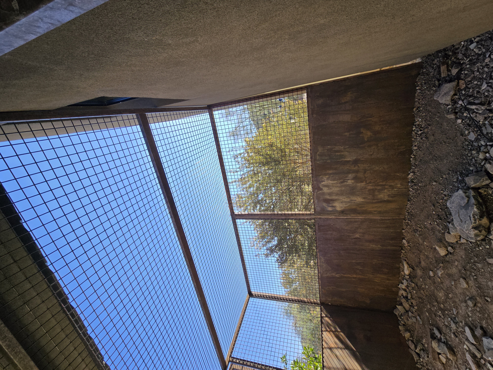
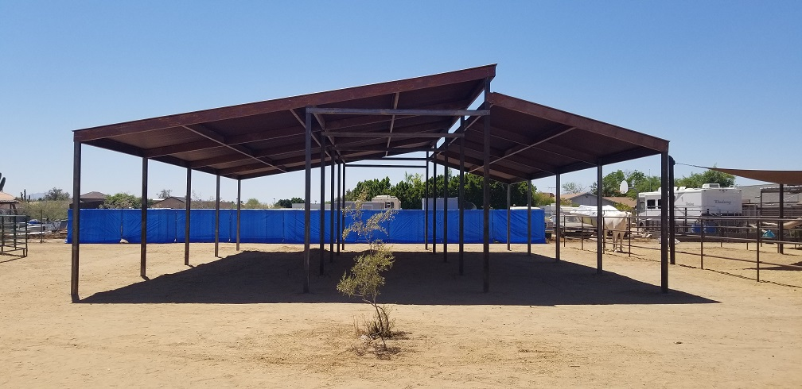
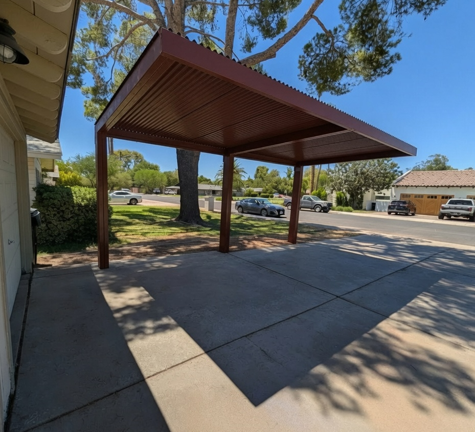
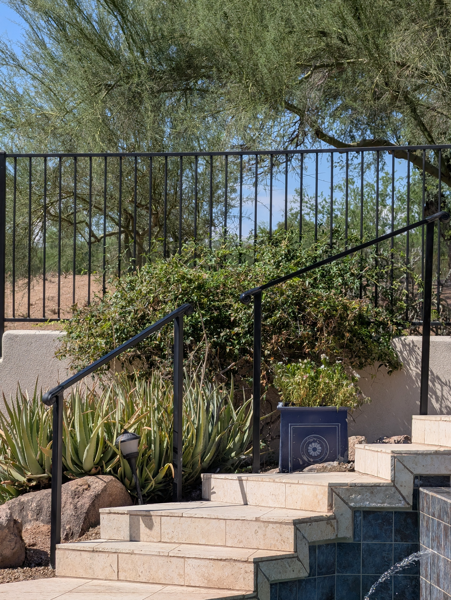
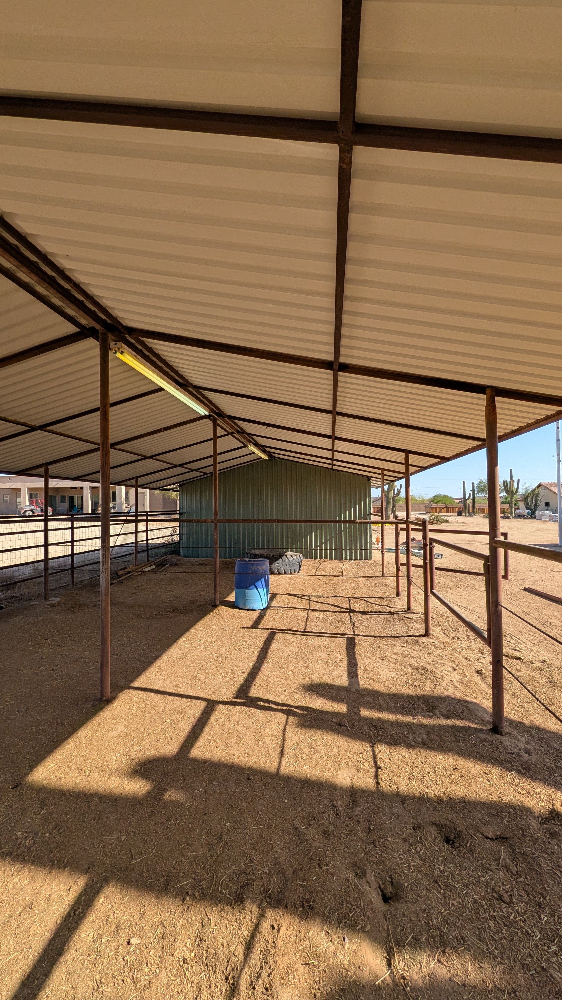
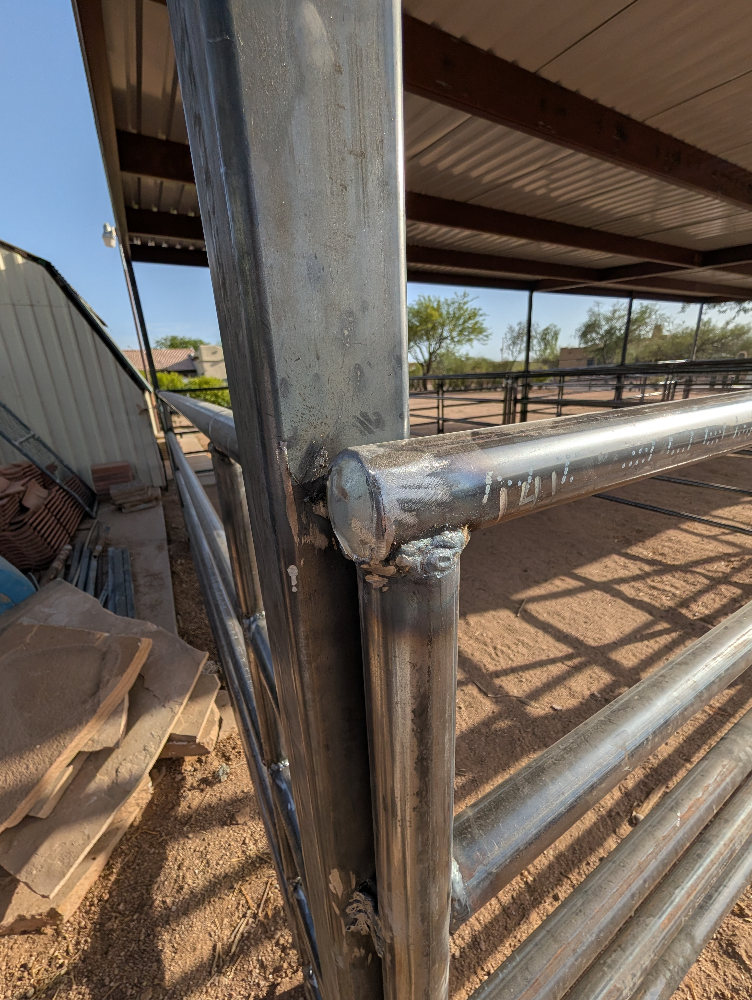
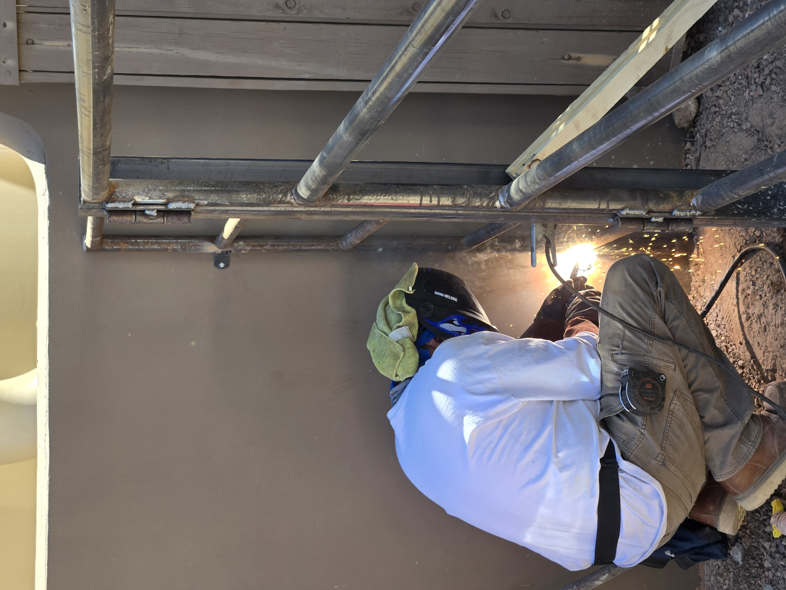
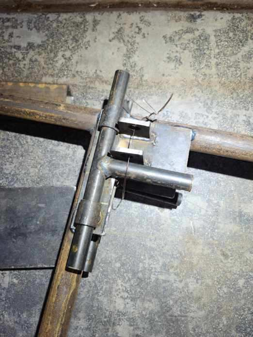
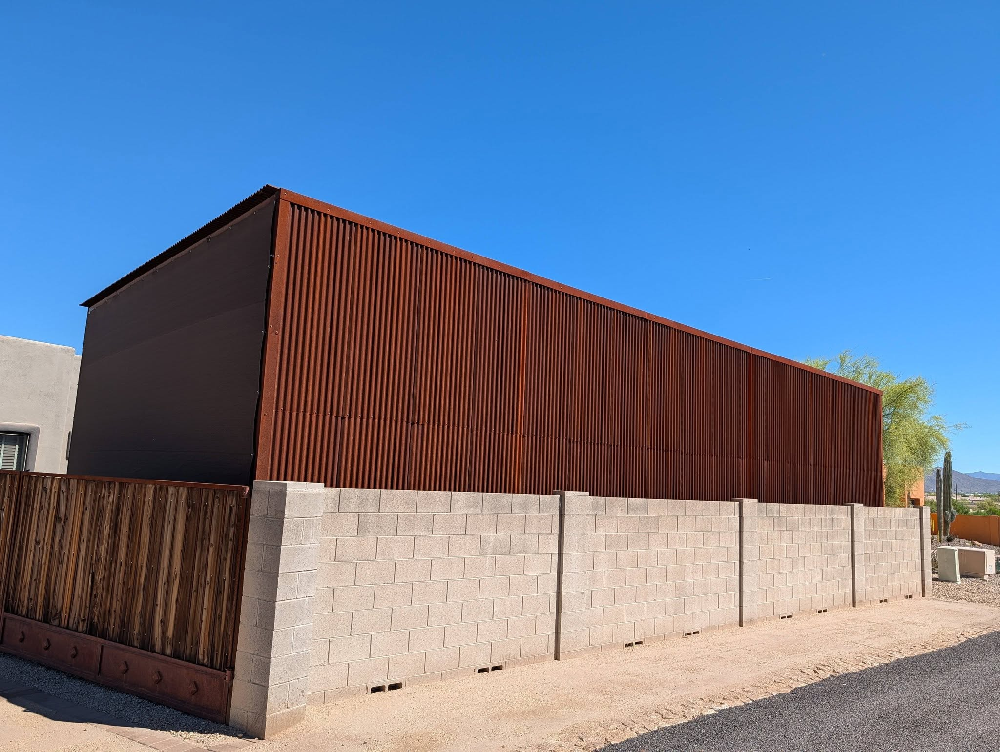
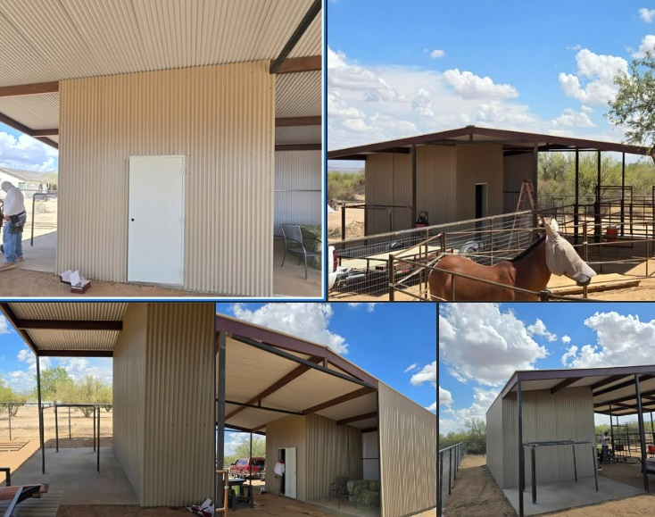

Phoenix AZ Welding & Custom Metal Fabrication
Stallion SteelWorks Welding provides custom welding, steel fabrication, structural welding, metal repairs, gates, doors, railings, trailers, furniture, brackets, frames, equipment repairs and custom metalwork throughout Phoenix, Arizona and the surrounding Valley.
Whether you need a professional welder for a small repair, a custom fabricated steel component, a welded gate, structural steel, architectural metalwork or a complete custom steel project, we build solutions around the actual requirements of the job.
Custom Welding and Steel Fabrication Built for Arizona
Finding the right welder in Phoenix AZ means finding someone who can do more than simply join two pieces of metal. Professional welding requires proper fit-up, preparation, material selection, weld placement, reinforcement and an understanding of how the finished component will actually be used.
Stallion SteelWorks specializes in custom metal fabrication and welding in Phoenix. We work with steel and other appropriate metals to create functional, durable and visually clean assemblies for residential, commercial, agricultural, automotive and property-improvement applications.
Our work includes everything from steel gates and metal railings to structural frames, trailer repairs, custom brackets, welded furniture, doors, security structures, shade structures and one-off fabrication projects.
We serve Phoenix and surrounding communities throughout the Valley of the Sun. If your project requires steel to be cut, fitted, reinforced, fabricated or welded, contact Stallion SteelWorks for a project evaluation.
Custom Welding
Custom welded assemblies fabricated around your dimensions, drawings, photos or project requirements.
Metal Fabrication
Steel frames, brackets, supports, bases, structures, components and custom fabricated metalwork.
Welding Repairs
Repair and reinforcement of appropriate steel and metal components, equipment, gates, trailers and frames.
Welding Services in Phoenix, Arizona
Stallion SteelWorks offers a broad range of welding and metal fabrication services for homeowners, property owners, contractors, businesses, ranches, shops and other customers throughout the Phoenix metropolitan area.
- Custom welding
- Steel welding
- Structural welding
- MIG welding
- Stainless steel welding
- Metal fabrication
- Custom steel fabrication
- Steel frame fabrication
- Metal frame fabrication
- Welding repairs
- Steel repairs
- Metal reinforcement
- Trailer welding
- Trailer repairs
- Trailer reinforcement
- Equipment welding
- Equipment repairs
- Gate welding
- Steel gate fabrication
- Driveway gates
- Pedestrian gates
- Security gates
- Equipment gates
- Steel door fabrication
- Security doors
- Metal doors
- Handrails
- Steel railings
- Metal railings
- Guardrails
- Stair railings
- Custom brackets
- Steel brackets
- Mounting brackets
- Equipment mounts
- Steel supports
- Custom steel frames
- Welded furniture
- Steel tables
- Steel benches
- Steel shelving
- Furniture frames
- Industrial furniture
- Decorative metalwork
- Architectural metalwork
- Custom steel art
- Fire feature fabrication
- Custom steel components
- One-off fabrication
- Prototype fabrication
- Steel modifications
- Metal alterations
- Steel reinforcement
- Welded supports
- Custom equipment frames
- Custom shop fabrication
- On-site welding evaluation
- Mobile welding services where applicable
Custom Steel Fabrication in Phoenix AZ
Custom fabrication is ideal when an off-the-shelf component does not fit the project. Stallion SteelWorks can fabricate custom steel frames, brackets, supports, bases, panels, mounts, equipment components, furniture frames and other welded assemblies.
We can work from measurements, photographs, sketches, reference images or project concepts. Our goal is to turn the required dimensions and intended use into a practical metal assembly that can be fabricated and installed correctly.
Steel Frames
Custom structural frames for barns, shade, mare motels, equipment, structures, furniture, architectural applications and specialized projects.
Brackets & Supports
Custom steel brackets, mounts, tabs, supports and reinforcement pieces fabricated to project dimensions.
One-Off Metal Projects
Have something unusual that needs to be made from steel? Send dimensions, photos or a sketch and we can evaluate the fabrication requirements.
Custom Steel Gates, Doors & Railings
Stallion SteelWorks fabricates custom metal gates and architectural steelwork for residential and commercial properties throughout Phoenix and the Valley.
We can fabricate driveway gates, pedestrian gates, security gates, equipment gates, steel doors, handrails, stair railings, guardrails and other welded metal assemblies.
Steel Gates
Custom driveway gates, walk gates, security gates, equipment gates and property-access gates.
Steel Doors
Custom steel doors, security doors, frames and fabricated metal entrance components.
Railings & Handrails
Steel handrails, stair railings, guardrails and custom architectural metal railings.
Welding Repairs, Reinforcement & Metal Repairs
Broken welds, cracked steel, damaged brackets, bent frames and failed connections can create larger problems when they are not repaired correctly.
Stallion SteelWorks evaluates appropriate welding repair projects and can fabricate replacement pieces or reinforce damaged areas when the underlying material and application make repair practical.
Trailer Welding
Trailer frame repairs, reinforcement, brackets, tabs and other appropriate welded trailer components.
Equipment Repairs
Welded equipment repairs, mounts, supports, brackets and fabricated replacement components.
Steel Reinforcement
Reinforcement of appropriate steel frames, brackets, gates, structures and fabricated components.
Welded Steel Furniture & Custom Metalwork
Welding does not have to be purely structural. Custom welded furniture combines fabrication, geometry and finish to create unique pieces for homes, businesses, patios, shops and commercial spaces.
Stallion SteelWorks can fabricate steel furniture frames, table bases, benches, shelving, industrial furniture, decorative frames and other custom welded pieces.
Steel Tables
Custom welded table bases and frames designed around wood, stone, composite or other tops.
Benches & Seating
Heavy-duty welded seating frames and custom metal furniture components.
Industrial Decor
Custom steel frames, architectural pieces, art structures and decorative welded metalwork.
Steel Carports, Patio Covers & Shade Structures
Stallion SteelWorks also specializes in larger steel fabrication and shade structures. If your project involves steel posts, beams, purlins, cantilever structures, carports, patio covers or custom shade structures, visit our dedicated steel structure websites.
Explore our main Stallion SteelWorks website for broader steel construction and fabrication services.
For steel shade structures, patio covers, carports and related outdoor structures, visit Stallion Steel Shade.



Arizona Steel, Corral, Kennel & Shade Services
Stallion SteelWorks operates a group of specialized websites covering steel construction, shade structures, corrals, kennels and pet enclosures.
Stallion SteelWorks
Visit the main Stallion SteelWorks website for steel construction, fabrication, structures, shade and related services.
Stallion Steel Shade
Dedicated steel shade structures, patio covers, carports, cantilever structures and outdoor steel solutions.
OK Corrals
Custom steel corrals, livestock enclosures, ranch structures and related steel products.
Pet Safe Kennels
Custom pet enclosures, dog kennels, secure outdoor enclosures and fabricated pet structures.
Pet Safe Catios
Secure custom catios and outdoor cat enclosure solutions designed for safe outdoor access.
Welding Services Throughout Phoenix & the Valley
Stallion SteelWorks serves customers throughout the greater Phoenix metropolitan area and surrounding communities. Our service area includes Phoenix and cities across the East Valley, West Valley, North Valley and central Valley.
Looking for a welder near me, metal fabrication near me, custom welding near me or steel fabrication near me? If you are located anywhere in or around the Phoenix metropolitan area, contact us with your project details.
Phoenix & Central Valley
East Valley
West Valley
North Valley
Outer Phoenix Metropolitan Area
Service availability can vary by project, distance, access, material requirements and scheduling. Contact Stallion SteelWorks with your location and project details to confirm service.
Local Welding Services Across the Phoenix Metro Area
Stallion SteelWorks is positioned to serve customers searching for welding and fabrication services throughout the Phoenix Valley. That includes homeowners searching for a Phoenix welder, contractors looking for steel fabrication in Scottsdale, businesses needing commercial welding in Mesa, property owners needing gate welding in Chandler, or customers looking for metal fabrication in Glendale, Peoria, Tempe, Gilbert, Surprise, Goodyear or Avondale.
We understand that welding projects can range from a simple broken bracket to a completely custom steel assembly. Providing the right fabrication approach depends on the dimensions, material, application, loading, environment and intended use of the finished product.
Our Phoenix-area welding services are intended for projects that require practical fabrication, strong welds, clean fitment and durable metal construction.
Welder Phoenix AZ
Custom welding and metal fabrication for Phoenix residential, commercial and specialty projects.
Welder Scottsdale AZ
Custom gates, railings, steel fabrication, furniture, repairs and specialty welding for Scottsdale projects.
Welder Mesa AZ
Metal fabrication, welding repairs, steel frames, brackets, gates and custom fabrication in Mesa.
Welder Chandler AZ
Custom steel fabrication, gates, doors, repairs, railings and welded assemblies in Chandler.
Welder Gilbert AZ
Custom welding and fabricated steel projects throughout Gilbert and surrounding East Valley communities.
Welder Glendale AZ
Welding repairs, steel fabrication, gates, railings, frames and custom metalwork in Glendale.
Welder Peoria AZ
Custom welding, metal repairs, steel structures and fabricated components serving Peoria.
Welder Tempe AZ
Custom metal fabrication, architectural metalwork, railings, frames and welding services in Tempe.
Welder Surprise AZ
Steel fabrication, gates, repairs, brackets, structures and custom welding serving Surprise.
Built Around the Project — Not a One-Size-Fits-All Solution
Every welding project is different. Material thickness, geometry, access, intended load, movement, exposure and finishing requirements can all affect how a project should be fabricated.
Stallion SteelWorks focuses on practical fabrication, accurate fit-up, strong welds and clean finished work. When a project requires engineering, permitting, certification or another specialty beyond fabrication, those requirements should be addressed before construction begins.
Built to Spec
Projects are fabricated around dimensions and actual requirements rather than forcing your project into an off-the-shelf product.
Clean Fabrication
Proper layout, fit-up and finishing help produce professional-looking finished steelwork.
Arizona Experience
Projects are fabricated with Arizona conditions, outdoor exposure and long-term durability in mind.
Phoenix Welding & Steel Fabrication Projects
Browse examples of custom steel fabrication, welding, structural metalwork, gates, shade structures, frames and other welded projects.








Phoenix Welding FAQ
Do you weld custom projects?
Yes. Custom welding is one of our primary services. Projects can be based on measurements, photographs, drawings, sketches or an existing component.
Do you repair broken steel?
Appropriate steel components can often be repaired or reinforced depending on the condition, material, application and accessibility of the damaged area.
Can you fabricate steel from scratch?
Yes. Custom fabrication can include cutting, fitting, welding and assembling steel components into a finished frame, bracket, gate, furniture piece or other assembly.
Do you build steel gates?
Yes. Driveway gates, walk gates, security gates, equipment gates and other custom steel gate assemblies can be fabricated.
Do you weld trailers?
Appropriate trailer welding and reinforcement projects can be evaluated, including frames, brackets, tabs and other metal components.
Do you serve areas outside Phoenix?
Yes. Stallion SteelWorks serves many communities throughout the Phoenix metropolitan area and surrounding Valley. Contact us with your location before scheduling.
Need a Welder in Phoenix, Arizona?
Send Stallion SteelWorks a photo of the project, approximate dimensions, your location and a short description of what you need welded or fabricated.
The more information you provide, the easier it is to determine the appropriate fabrication approach and next step.
Stallion SteelWorks Welding
Phone: 602-999-7756
Email: stallionsteelworks@gmail.com
Arizona ROC: #364194